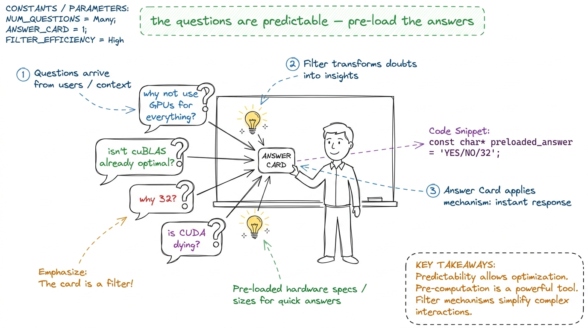
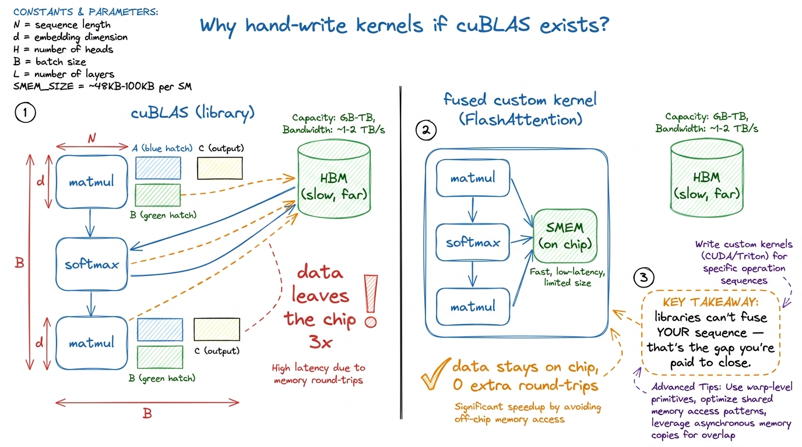
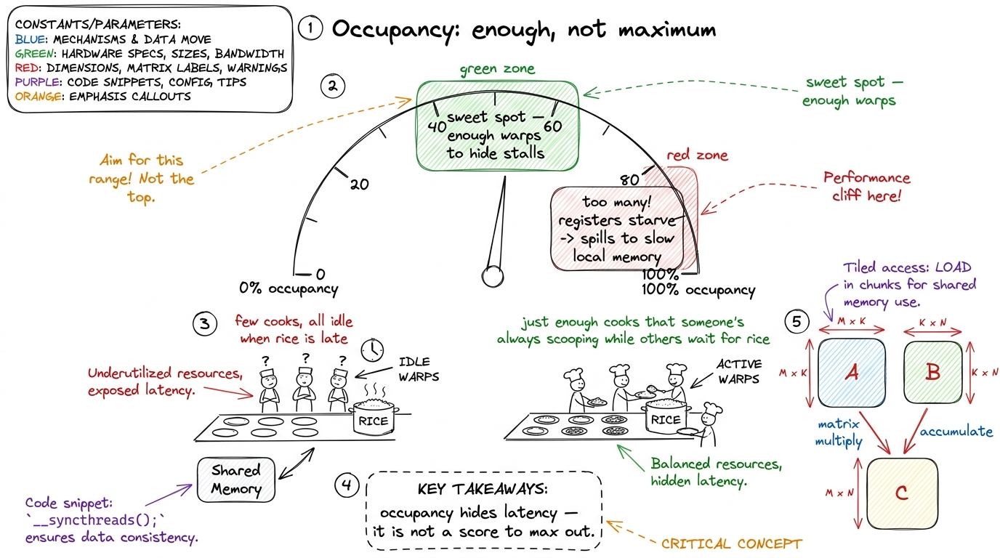
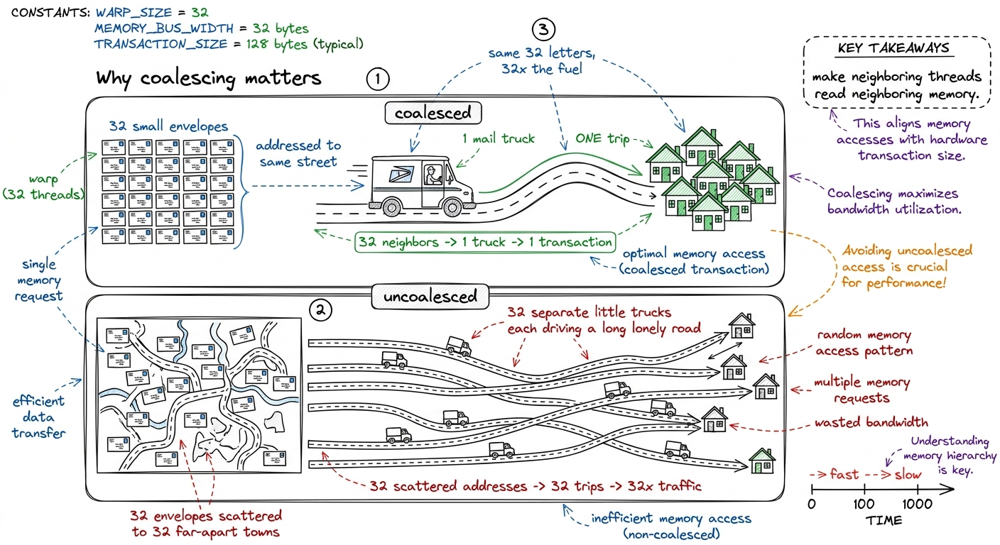
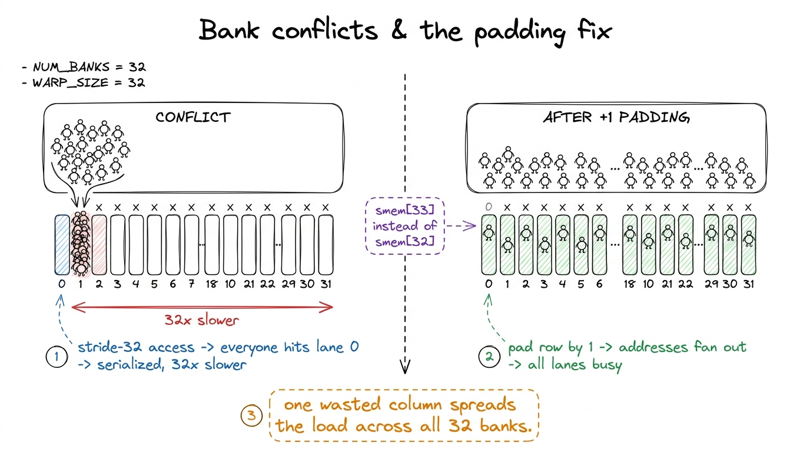
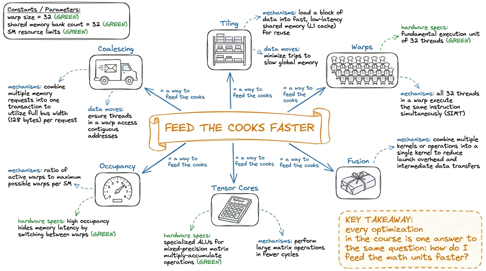

The questions students always ask (with crisp answers)
By the end of this chapter you'll have a loaded quiver: the fifteen questions students ask in every kernel workshop, and a tight, correct, board-ready answer for each — so that when a hand goes up mid-lecture, you never freeze, never bluff, and never derail the session. This is not new material. It's a readiness chapter. Read it once before each lecture and you will walk in unshakeable.
Here's the truth about teaching this subject: the questions are astonishingly predictable. The same confusions surface in the same spots, cohort after cohort. That's a gift. You can pre-load the good answer — the one with a metaphor, a number, a production hook — instead of improvising under pressure. Each question below comes with the tight answer to say out loud, the deeper version if they push, and the trap to avoid.
🎓 Teaching note
Print this chapter and keep it on the lectern. When a question lands, glance down, find it, deliver the pre-loaded answer. Students read confidence as competence. A crisp two-sentence answer with a number in it does more for your authority than ten minutes of hedging. And if a question is genuinely off-map, the honest "great question — let me think at the board" beats a bluff every time. They can smell a bluff.

figure rendering · The mentor's superpower: the questions repeat, so you can pre-load the
The mentor's superpower: the questions repeat, so you can pre-load the answers and stay calm.
The "why is it even like this?" questions
These come early, usually in the first two lectures, and they're really about motivation. The student isn't doubting a fact; they're asking "why should I care?"
Q1. "Why not just use GPUs for everything, then?"
🎤 Say this at the board
"Because most of what a computer does is one intricate task at a time — opening a browser, reacting to your click, running the operating system. Those are full of decisions and branches. Hand that to a GPU and 9,999 of its 10,000 tiny workers stand idle. GPUs only win when the work is massively repetitive and identical — like the same multiply-add a billion times. That's AI. It's not most computing."
Deeper, if they push: a CPU spends silicon on handling branchy code fast — big caches, branch prediction, out-of-order execution. A GPU throws that away to fit more arithmetic units on the die, so decision-heavy work runs slower on it. The trap: don't say "GPUs are just faster." They're faster only at the cafeteria's kind of job.
Q2. "Isn't cuBLAS / cuDNN already optimal? Why are we hand-writing kernels?"
This is the existential one, and you must answer it well or half the room quietly checks out. Three honest reasons.
🎤 Say this at the board
"Three reasons. One: cuBLAS is a library — it's fast for the shapes NVIDIA cared about, but your model has weird shapes, and a fused custom kernel often beats it. Two: cuBLAS does one thing; the wins now come from fusion — doing several operations in one kernel so data never leaves the chip, and no library can fuse your specific sequence. Three: you can't learn to drive by only riding in taxis. To reach for the 5% cuBLAS leaves on the table, you have to understand the machine."
🏭 In production today
Make it concrete: FlashAttention exists precisely because no library op could fuse attention's matmul-softmax-matmul chain without spilling a huge N×N matrix to memory. A hand-written fused kernel did what cuBLAS architecturally could not. The entire industry adopted it in months. That's the proof that "the library already did it" is false — the biggest kernel win of the decade was a custom kernel.

figure rendering · The honest answer to "isn't the library already optimal?": libraries c
The honest answer to "isn't the library already optimal?": libraries can't fuse your specific chain — fusion is the frontier.
Q3. "Is CUDA dying? Should I learn Triton / Mojo instead?"
🎤 Say this at the board
"Learn both, in this order. Triton and higher-level tools handle the common cases beautifully in forty lines — use them first, always. But they generate CUDA-like code, and when you need the last 20%, or a pattern the compiler can't express, you drop to raw CUDA. Every high-level tool is a leaky abstraction over the ideas in this workshop. Understand the floor and every ceiling makes sense."
The trap: don't take sides tribally. The right frame is a ladder of abstraction (this is literally Workshop 3): Triton → CUTLASS/CuTe → raw CUDA. You climb down only as far as the problem demands. Knowing the bottom rung is what lets you judge when to climb.
The "wait, why that number?" questions
These are about specifics, and students love them because a crisp numeric answer feels like a secret unlocked.
Q4. "Why 32? Why is a warp exactly 32 threads?"
🎤 Say this at the board
"It's a hardware fact, not a law of nature. NVIDIA built the scheduler to issue one instruction to 32 threads in lockstep — that group is a warp. Thirty-two is the granularity of everything: divergence, coalescing, scheduling. So you design your kernels in multiples of 32, because that's the size of the machine's 'spoonful.'"
⚠️ Where students trip
A student will conflate warp (32, hardware) with block (up to 1024, your choice). Fix it with the cafeteria: a warp is a fixed squad of 32 cooks that always move together; a block is a team you assemble from several squads and assign to one kitchen station (an SM). You pick the block size; you never pick the warp size — it's welded to 32.
Q5. "What actually is 'occupancy,' and is more always better?"
🎤 Say this at the board
"Occupancy is: of all the warps an SM could hold, what fraction are actually resident. More resident warps means when one warp stalls waiting for data, the scheduler swaps in another — so the math units stay busy. That's how a GPU hides latency. But — and this surprises everyone — max occupancy is NOT the goal. Past a point, more warps means fewer registers each, which forces slow spills. The best kernels often run at 50–60% occupancy."
✨ The click
The number that lands: "Your fastest GEMM kernel will probably run at lower occupancy than a slow one. Occupancy is a means to hide latency, not a score to maximize. Enough warps to hide the stalls, and not one more — because every extra warp taxes your registers." This reframes a metric students arrive treating as a leaderboard.

figure rendering · Occupancy is a dial you tune to "enough to hide stalls," not a leaderb
Occupancy is a dial you tune to "enough to hide stalls," not a leaderboard to top.
Q6. "What does '% of peak' mean, and what's a good number?"
🎤 Say this at the board
"Every GPU has a theoretical top speed — for an H100 that's about 989 teraFLOP/s in BF16. Your kernel does some fraction of that. The naive matmul kernel from Lecture 4 hits about 1.3% of cuBLAS. By the end of the ladder we're at 93%+. '% of peak' is the master question of this whole workshop: after every change you ask 'what percent am I at now, and what's stopping me from more?'"
Deeper: peak has two flavors — compute (FLOP/s) and memory bandwidth (~3.35 TB/s on H100). Which one you can chase depends on your arithmetic intensity (FLOPs per byte); the crossover ratio (~295 on H100) is the hinge of the roofline. The trap: never compare absolute GFLOP/s across different GPUs — always normalize to percent of that chip's peak.
The "how does the fast trick actually work?" questions
Q7. "Why does coalescing matter so much? It's just reordering memory reads."
🎤 Say this at the board
"Because the GPU doesn't fetch one number at a time — it fetches a whole cache line, 32 or 128 bytes, in one transaction. If your 32 threads read 32 neighboring addresses, that's ONE transaction — everybody's fed. If they read 32 scattered addresses, that's up to 32 separate transactions — 32× the memory traffic for the same data. Coalescing is just: make neighboring threads read neighboring memory."
🧠 Metaphor
The post office. Coalesced: 32 letters all going to the same street, so one mail truck does one run and drops them all. Uncoalesced: 32 letters to 32 different towns — 32 truck runs for the same 32 letters. Same letters, 32× the fuel. That's why a one-line reindexing can make a kernel several times faster.

figure rendering · Coalescing as a mail truck: one trip for neighboring letters, versus 3
Coalescing as a mail truck: one trip for neighboring letters, versus 32 lonely trips for scattered ones.
Q8. "What's a bank conflict, and why does padding by one fix it?"
🎤 Say this at the board
"Shared memory is split into 32 'banks' — like 32 checkout lanes. If your 32 threads hit 32 different lanes, all served at once. If several threads hit the same lane, they queue up — that's a bank conflict, and it serializes them. When you store a matrix column-wise, stride-32 access makes everyone land in the same lane. Padding each row by one element shifts the addresses so the accesses fan out across all 32 lanes. One wasted column buys you a conflict-free kernel."

figure rendering · Bank conflicts as a single-lane checkout jam, and why padding by one f
Bank conflicts as a single-lane checkout jam, and why padding by one fans the shoppers across all lanes.
Q9. "Tensor cores sound like magic. What do they actually do that's different?"
🎤 Say this at the board
"A normal core multiplies two numbers. A tensor core multiplies two small matrices — like a 16×16 tile — and adds the result, in a single instruction. It's a matmul-shaped calculator instead of a scalar one. That's an order-of-magnitude more math per instruction. The whole reason an H100 hits ~989 BF16 teraFLOP/s and not a tenth of that is: tensor cores. But you pay for it — you must feed them data in a specific fragment layout, which is what Lecture 6 is about."
🏭 In production today
Tensor cores are why the FLOP number is so huge and why FP8/FP4 matter: on Blackwell, dropping precision to NVFP4 lets the tensor core pack even more matmul per instruction — that's the DeepSeek/DSpark and W5 story, 2000μs → 22μs on a batched FP4 GEMV. Every frontier serving stack lives or dies by tensor-core utilization; "what's my tensor-pipe utilization?" is a question ncu answers directly.
The "am I doing something wrong?" questions
These are quieter, often asked after class or in the capstone. They're about the craft, and honest answers here build trust.
Q10. "My kernel is correct but slow. Where do I even start?"
🎤 Say this at the board
"Never guess — profile. Run Nsight Compute, read the SOL section: it tells you whether you're compute-bound, memory-bound, or overhead-bound. That single answer decides your whole strategy. Memory-bound? Fix coalescing and caching. Compute-bound? Reach for tensor cores or better ILP. Overhead-bound? Fuse or batch. The number-one beginner mistake is optimizing arithmetic when the kernel is starving for data."
⚠️ Where students trip
The universal beginner instinct is to make the math cleverer. But most slow kernels aren't compute-bound — they're fed too slowly. The fix-sentence: "Before you touch the arithmetic, ask the profiler which regime you're in. Optimizing compute on a memory-bound kernel is polishing a car that's out of gas." Send them to the roofline, always.
Q11. "How do I know when to stop optimizing?"
🎤 Say this at the board
"When you hit the roofline. Compute the ceiling for your kernel's arithmetic intensity — that's the physical max this chip can do for this problem. If you're at 90% of it, the remaining 10% probably costs more engineering than it's worth. 'Percent of the relevant peak' tells you both how far you've come and how much is even left. Chasing the last 3% is a business decision, not a technical one."
Q12. "Why does my GPU kernel give slightly different numbers than the CPU / than last run?"
🎤 Say this at the board
"Floating-point addition isn't associative — (a+b)+c ≠ a+(b+c) in the last bits. A parallel reduction adds numbers in a different order than a serial loop, and thread scheduling can change the order run to run. So tiny differences in the last decimals are expected and fine. What's NOT fine is large differences or NaNs — those are real bugs, usually a race condition or uninitialized memory."
✨ The click
The distinction to hand them: "A difference in the 6th decimal place is floating-point non-associativity — normal. A difference in the 1st decimal, or a NaN, is a race — a bug. Learn to tell them apart and you'll stop chasing ghosts and start catching real errors." This one sentence saves students hours of panic in the capstone.
The "big picture / career" questions
Q13. "Is this whole field going to be automated by AI writing kernels?"
Answer this with data, not opinion — it's Workshop 6, and you have the numbers.
🎤 Say this at the board
"Partly, and it's exciting, not scary. AI can write kernels — DeepSeek-V3 went from 4% to 37% correct with 100 samples, and to 72% with profiler feedback. CRFM's AI beat PyTorch on LayerNorm at 484%. But the honest failures are just as loud: AI-generated FlashAttention hit 9% of PyTorch. The pattern is human + AI + profiler in a loop — and someone has to build and read that loop. That someone understands everything in this workshop. The profiler is the ground truth, and reading it is your job."
🏭 In production today
The framing that lands: automated kernel generation is itself a kernels problem and a harness problem — you need someone who can judge whether the AI's kernel is actually good, which requires exactly the ncu-reading, roofline-thinking skill this course builds. The people who can supervise the machine are worth more, not less. This is the capstone's whole "you vs the machine" thesis.
Q14. "I don't have an H100. Can I even do this?"
🎤 Say this at the board
"Yes. Every concept — coalescing, tiling, warps, occupancy, the roofline — is identical on a $300 consumer card or a free Colab T4. The peak numbers differ, but 'what percent of peak am I at' is the same game on any GPU. You learn the thinking on whatever you have; the H100-specific tricks (TMA, WGMMA) are a later layer on the same foundation."
The trap to avoid: don't let hardware-envy become an excuse. The skills transfer completely. Some of the best worklogs the course is built on were done on modest cards.
Q15. "This is a lot. What's the ONE thing to hold onto?"
🎤 Say this at the board
"This: a GPU is almost never limited by how fast it can do math — it's limited by how fast you can feed it data. Every trick in four weeks is a better way to feed the cooks. If you remember only one sentence, remember that one, and everything else has a place to hang."

figure rendering · The single sentence every topic hangs from: everything is a better way
The single sentence every topic hangs from: everything is a better way to feed the cooks.
▶️ Live demo
Keep one live artifact ready for the doubters: the L4 ladder printout showing naive matmul at 1.3% of cuBLAS climbing to 93%+ by kernel 10, each rung with its ncu regime. When ANY of the "why bother?" questions come up — Q2, Q11, Q13 — point at the ladder. Nothing answers "does this actually matter?" like a real number going from 1.3% to 93% through the exact techniques on the board.
1 When you genuinely don't know an answer, the strongest move is: "I don't know — let's reason it out at the board / let's profile it and find out." In a kernel course especially, "let's measure it" is not a dodge; it is the correct methodology. Modeling that beats faking certainty.
2 Watch the timing of questions. "Why not GPUs for everything?" belongs in L1. "When do I stop optimizing?" belongs in L4–L5. If a deep question arrives early, park it warmly ("brilliant — that's exactly Lecture 5, hold it") rather than derailing. Parking is a skill; it keeps the arc intact and flatters the asker.
You can now teach
Field the fifteen recurring questions — from "why not GPUs for everything?" to "will AI automate this?" — with a crisp, correct, numbered answer for each.
Answer the existential ones (Q2, Q13) with production proof: FlashAttention as the "libraries can't fuse your chain" case, and the real 4%→72% AI-kernel numbers.
Fix the specific confusions on the spot: warp-32 vs block-size, occupancy-is-not-a-score, floating-point non-associativity vs a real race.
Use the "feed the cooks faster" through-line to give every question a place to hang, so answers reinforce the course spine instead of scattering.
Model the professional's reflex — "let's profile it and find out" — so that "I don't know" becomes a teaching moment, not a crack in your authority.
Know when to answer and when to park, keeping the lecture arc intact while making every asker feel smart.